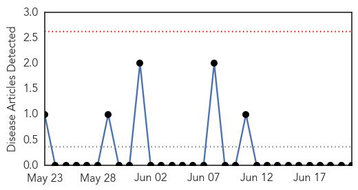
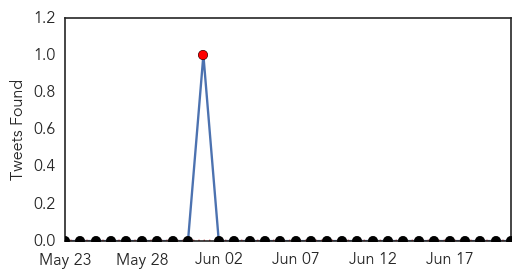

Mumps
30-Day Web Trend
0 alerts, 0 warnings

30-Day Twitter Trend
1 alerts, 0 warnings

Article Locations

Article Confidences

Top Articles:
-
No articles found for Jun 21, 2015
Top Tweets:
-
No tweets found for Jun 21, 2015
Ebola
30-Day Web Trend
0 alerts, 0 warnings

30-Day Twitter Trend
0 alerts, 0 warnings

Article Locations

Article Confidences

Top Articles:
- 0.999
- Gene mutation in Ebola outbreak provides epidemiological insight
- 0.998
- MERS virus spreads in Asia
- 0.998
- West Africa Ebola strain mutated only slightly more than previous outbreaks: British study
- 0.997
- South Korea reports no new cases in MERS outbreak
- 0.996
- No more cases of MERS in Thailand, says health minister, news, Health News, AsiaOne YourHealth
- 0.993
- MERS cases in South Korea rise to 87, with six deaths
- 0.992
- Ebola Travel Bans Still Aren't Over for Liberians – Skift
- 0.992
- Liberians still face travel headaches even after Ebola
- 0.984
- Kenyan medics who helped fight Ebola to be rewarded
- 0.969
- N. Koreans in Middle East Told to Stay Put Over MERS Fears
- 0.944
- North Korea beats Ebola, AIDS, MERS, SARS, claims their drug cures them all
- 0.938
- Breaking News Updates: North Korea claims to have MERS cure
- 0.924
- Uhuru praises brave medics from Ebola combat mission
- 0.915
- Kenya : Ebola volunteers to be rewarded for heroic choice, says Uhuru
- 0.912
- North Korea claims AIDS cure found
- 0.875
- U.S. High School Students in Liberia to Aid Science/Math Students
- 0.758
- PAN AFRICAN PARLIAMENT VICE-PRESIDENT GETS ROSY WELCOME IN KENEMA
- 0.734
- Ghana, Business Advice, Jobs, News, Business Directory, Real Estate, Finance, Forms, Auto
- 0.548
- Zimbabwe to get 'Manna' from Mali, but ......
Top Tweets:
- 0.937
- Ebola drug trial stops adding patients - SBS http://t.co/rdmsU9bWhr ebola EVD
- 0.867
- Gene mutation in Ebola outbreak provides epidemiological insight - Ars Technica (blog) http://t.co/n8Gdn1xoxi ebola EVD
- 0.856
- 'Emerging Diseases' takes on MERS, Ebola, more - http://t.co/NXdg7rTQZC http://t.co/DNC05IyooB ebola EVD
- 0.835
- Kim Jong-Un Reportedly Has A Miracle Drug That Can Cure Ebola, AIDS, And ... - UPROXX http://t.co/gmeoQrMIwA ebola EVD
- 0.820
- North Korea Miracle Drug: Kim Jong-Un Claims Drug Cures AIDS, Ebola, And ... - The Inquisitr http://t.co/FMoXaaAVqI ebola EVD
- 0.812
- With Ebola case counts (thankfully) dropping so low, chances are slim Ebola vaccine trials will prove efficacy. http://t.co/qjGnchsD0R
- 0.652
- Ebola drug trial stops adding patients - http://t.co/Fv6J8mBKfu http://t.co/bcQLYJSxxu ebola EVD
- 0.611
- Drugs to fight Ebola may already be in your medicine cabinet - http://t.co/zkX8b4sv1U http://t.co/lh79cLNZnt ebola EVD
- 0.545
- Together we can defeat Ebola Africaagainstebola https://t.co/J3PjQnHGyr